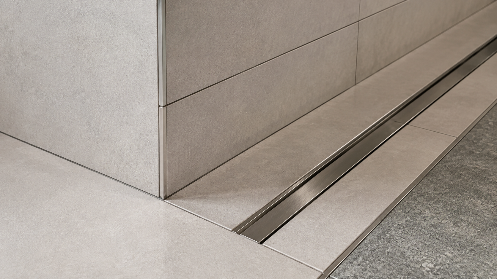

01BASE CONDITION
바탕
균열, 수분, 평활도, 기존 마감 상태를 확인합니다. 바탕의 문제를 타일 두께로 덮지 않습니다.
CHECK / 균열 · 수분 · 단차 · 오염FIELD STANDARD / REV.01

균열, 수분, 평활도, 기존 마감 상태를 확인합니다. 바탕의 문제를 타일 두께로 덮지 않습니다.
CHECK / 균열 · 수분 · 단차 · 오염주요 출입구와 가구 중심, 시선의 끝에서 타일이 어떻게 잘리는지 먼저 그립니다.
CHECK / 기준축 · 절단폭 · 줄눈 흐름자재와 바탕에 맞는 시공 조건을 정하고 넓은 표면에서 단차가 반복되지 않게 확인합니다.
CHECK / 자재 · 면 · 양생 · 보행 시점코너, 금속 프로파일, 배수, 문턱과 다른 바닥재가 만나는 순서를 사전에 맞춥니다.
CHECK / 코너 · 배수 · 이질재 · 마감재WORKFLOW
NEXT / SITE REVIEW